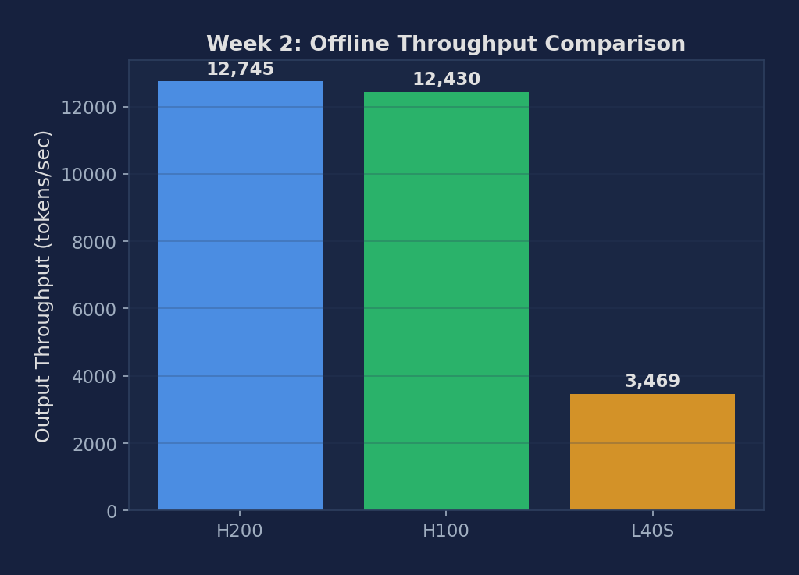
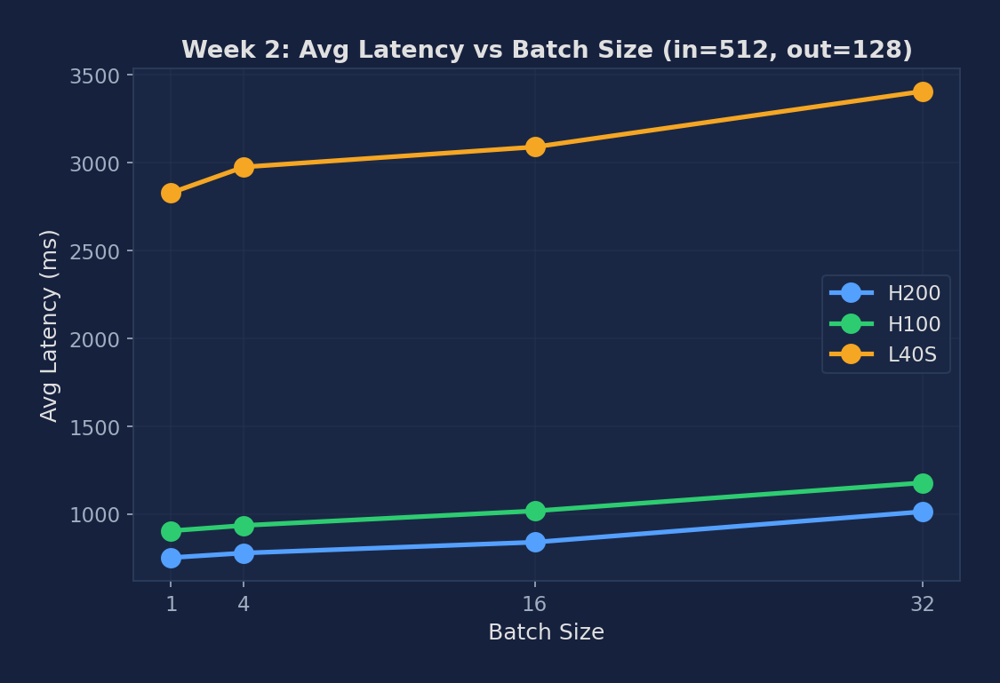

Measure batched throughput, profile a single forward pass, and read PyTorch Profiler traces in Perfetto
A CUDA kernel is a single GPU function launch. For Llama-3.1-8B, one decode step fires roughly 100+ kernels per layer × 32 layers ≈ 3 000+ kernels per step. The PyTorch Profiler records when each kernel was launched, when it actually ran on the GPU, how long it ran, and writes the timeline to a JSON file. Perfetto UI (https://ui.perfetto.dev, browser-only) opens that JSON as a horizontal timeline with CPU threads on top and GPU streams below. Look for (a) which kernels dominate decode time — should be attention and MLP GEMMs, not RMSNorm — and (b) gaps between kernels, which are CPU-side launch overhead that CUDA graphs (Week 10) eliminates.
# Ensure GPU monitoring is running before any experiment
nvidia-smi dmon -s pucm -d 1 -f gpu_monitor_w2.csv &
# Verify vLLM installation
python -c "import vllm; print(vllm.__version__)"
# Verify SGLang installation
python -c "import sglang; print(sglang.__version__)"Run benchmark_throughput.py with 500 prompts from the ShareGPT dataset. This sends all requests in one offline batch.
python benchmarks/benchmark_throughput.py \
--model meta-llama/Llama-3.1-8B-Instruct \
--dataset ShareGPT_V3_unfiltered_cleaned_split.json \
--num-prompts 500 \
--output-json throughput_vllm.jsonUse bench_one_batch to sweep multiple batch sizes and measure raw decode throughput. The provided harness (week02_throughput_profiling.py) does NOT run this step — it is a hand-run optional comparison. Skip on A100/H100/H200/Blackwell in our environment (known sgl_kernel SM80 ABI mismatch); works on L40S.
python -m sglang.bench_one_batch \
--model meta-llama/Llama-3.1-8B-Instruct \
--batch-size 32 64 128 \
--input-len 512 \
--output-len 256Profile a single forward pass to measure per-token decode latency at batch size 1.
python benchmarks/benchmark_latency.py \
--model meta-llama/Llama-3.1-8B-Instruct \
--input-len 512 \
--output-len 128 \
--batch-size 1 \
--num-iters 10Enable the PyTorch profiler and export a trace for visualization in Perfetto UI:
# Run vLLM with profiling enabled
VLLM_TORCH_PROFILER_DIR=./profiles vllm serve \
meta-llama/Llama-3.1-8B-Instruct --port 8000
# Send a few requests, then open the trace:
# Go to https://ui.perfetto.dev and load the .json trace fileRun nvidia-smi dmon in a second terminal while Steps 1 & 3 are running and compare utilization patterns. The provided harness does NOT start dmon automatically — this is an optional hand-run observation. Offline should show sustained high utilization; online shows bursty patterns.
# In a second terminal on the compute node:
nvidia-smi dmon -s pucm -d 1 -o DT -f gpu_monitor_w2.csvExperiments run on PACE Phoenix cluster across NVIDIA H200 141GB, H100 80GB, and L40S 48GB. Llama-3.1-8B-Instruct (BF16), max-model-len 4096.
| GPU | Throughput (tok/s) | vs L40S |
|---|---|---|
| NVIDIA H200 141GB HBM3e | 12,745 | 3.67× |
| NVIDIA H100 80GB HBM3 | 12,430 | 3.58× |
| NVIDIA A100 80GB PCIe HBM2e | 7,649 | 2.21× |
| NVIDIA L40S 48GB | 3,469 | 1.00× (baseline) |
| GPU / Batch | bs=1 | bs=4 | bs=16 | bs=32 |
|---|---|---|---|---|
| H200 (ms) | 750.6 | 776.8 | 838.4 | 1012.1 |
| H100 (ms) | 903.4 | 933.9 | 1016.5 | 1176.7 |
| A100 PCIe (ms) | 1533.2 | 1588.3 | 1730.7 | 1975.0 |
| L40S (ms) | 2828.3 | 2975.5 | 3089.4 | 3406.4 |
| H100/L40S ratio | 0.32× | 0.31× | 0.33× | 0.35× |
Per-token latency at bs=1: H200 5.86ms, H100 7.06ms, A100 PCIe 11.98ms, L40S 22.10ms. The A100 PCIe (1.935 TB/s HBM2e) sits between H100 (3.35 TB/s) and L40S (864 GB/s) — its per-token latency of 11.98ms reflects its HBM bandwidth being ~58% of H100's.

Figure 1: Offline throughput across H200, H100, A100 PCIe, L40S. H200/H100 are 3.6× faster than L40S. A100 PCIe (7,649 tok/s) sits 2.21× above L40S, consistent with its HBM2e vs GDDR6 bandwidth ratio. The HBM generation matters more than raw VRAM size for LLM decoding.

Figure 2: Avg latency growth from bs=1 to bs=32. Each GPU shows ~30% growth, indicating that batching is highly efficient — adding 31 more concurrent requests only adds ~30% latency to each one.
| Metric | Description | Unit |
|---|---|---|
| Offline throughput | Total tokens/sec in batched mode | tok/s |
| Per-token latency | Average time per output token (batch=1) | ms |
| GPU utilization % | From nvidia-smi dmon | % |
| Kernel time breakdown | Attention vs. MLP vs. other from Perfetto trace | % |
Below are real excerpts from vllm-continuum that implement the concepts you measured. Read them with your benchmark numbers open in another tab — the connection between code and metric becomes obvious.
vllm/entrypoints/openai/api_server.py:447 — Health / Routes@router.get("/health", response_class=Response)
@router.get("/load")
@router.get("/ping", response_class=Response)
@router.post("/v1/completions")
@router.post("/v1/chat/completions")These are the FastAPI route definitions. When you POST to /v1/completions, FastAPI calls the handler which constructs an OpenAIServingCompletion object and forwards to AsyncLLM.generate(). Use /health to check if the server is ready before sending real traffic — this is exactly what our wait_for_server() helper does.
Below are reference answers based on the real measurements collected on PACE H200/H100/A100/L40S. Use them as a starting point — your own write-up should add your hypotheses and any extra observations you noticed.
Observation: Week 1 H200 at rr=inf achieved 4,245 tok/s online; offline benchmark on the same H200 reaches 12,745 tok/s — a 3× gap. H100: 3,514 vs 12,430 tok/s (3.5×). L40S: 1,108 vs 3,469 tok/s (3.1×).
Why offline is faster: The online serving path has three major overheads absent in offline mode: (1) HTTP serialization — each response must be JSON-encoded and written to a TCP socket; (2) SSE streaming — tokens are flushed individually over the wire, adding per-token syscall and network overhead; (3) tokenizer/detokenizer — the online path runs tokenization per request in the HTTP process, not batched. The offline benchmark skips all three: it feeds pre-tokenized tensors directly to the engine and measures raw token generation throughput.
Caveat: Offline throughput is an upper bound, not a production figure. Always report both when characterizing a system.
Observation: H200 per-token latency: bs=1 → 5.86ms, bs=32 → ~7.6ms (+30%). H100: 7.06ms → ~9.2ms (+30%). L40S: 22.10ms → ~28.7ms (+30%). The growth is nearly identical across all three GPUs.
Memory-bound regime: Decode is memory-bandwidth-bound: the dominant cost per step is reading the entire 16GB model weight tensor from HBM once. This cost is fixed regardless of batch size (you still read the same weights). Adding 31 more sequences to the batch only adds: (a) 31 extra KV cache reads (small, ~1-2% of weight size) and (b) 31 extra matmul output writes. The extra work is proportionally tiny compared to the weight read, so latency grows slowly. This is the key insight of continuous batching: throughput scales linearly with batch size while latency barely moves.
What to look for in Perfetto: Open the Perfetto trace at ui.perfetto.dev. Look for the CUDA kernel timeline: search for cudaLaunchKernel events. MLP layers show up as large GEMM kernels (cutlass_gemm or ampere_sgemm) that take ~40-60% of step time. Attention shows up as flash_attention_fwd or paged_attention_v1 kernels that take ~10-20% of step time at bs=1 (scales with sequence length).
Kernel utilization heatmap: The heatmap shows GPU SM utilization over time. At bs=1 you should see periodic gaps (between forward passes) — these are scheduling overhead. The gap fraction shrinks as batch size grows. The gap between forward passes represents the AsyncLLM scheduler overhead (~0.1-0.3ms per step).
Theory check: For Llama-3.1-8B: 32 layers × 2 MLP GEMMs (gate+up and down projections) at shapes [hidden=4096, intermediate=14336]. At bs=1 these are tall-and-thin GEMMs (1×4096 × 4096×14336), deeply memory-bound. At large batch they approach square, becoming compute-bound. Attention at bs=1 is tiny (1 token attending to ~120 keys).